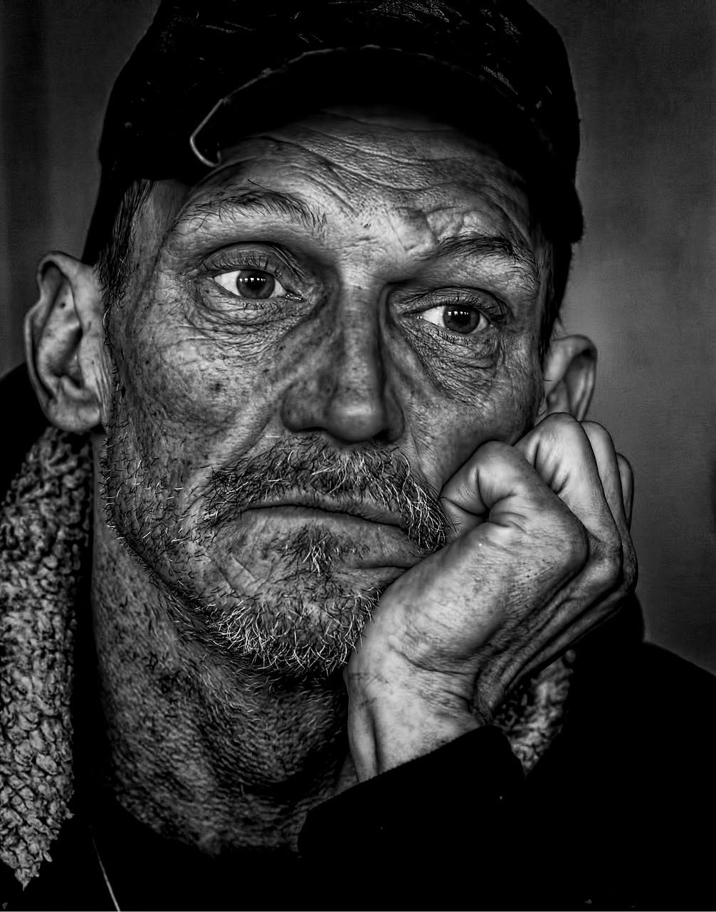

auf unserer Webseite zur Kleiderspende! Unser Ziel ist es, Menschen dazu zu ermutigen, alte Kleidung nicht einfach wegzuwerfen, sondern sie zu spenden und somit anderen in Not zu helfen. Viele von uns haben Kleiderschränke voller Kleidung, die nicht mehr getragen wird, aber noch in gutem Zustand ist. Anstatt diese Kleidung zu entsorgen, können wir gemeinsam einen bedeutenden Unterschied im Leben anderer Menschen machen. Durch das Spenden Ihrer alten Kleidung helfen Sie nicht nur dabei, die Umwelt zu schonen, sondern leisten auch einen wichtigen Beitrag zur Unterstützung von Menschen in Not. Wir als Team sind fest entschlossen, diese Spenden dorthin zu transportieren, wo sie am dringendsten benötigt werden. Unsere Organisation arbeitet mit verschiedenen Partnern zusammen, um sicherzustellen, dass die gespendeten Kleidungsstücke sicher und effizient in die gewünschten Länder transportiert werden. Die Not in vielen Regionen ist groß, und oft fehlt es an grundlegenden Ressourcen wie Kleidung. Ihre Spenden können einen bedeutenden Unterschied im Leben der Menschen machen, indem sie ihnen Wärme, Schutz und ein Gefühl der Würde geben. Es ist uns ein Anliegen, sicherzustellen, dass jede gespendete Kleidung einen wertvollen Beitrag zur Verbesserung der Lebensbedingungen der Empfänger leistet. Ihre Unterstützung trägt dazu bei, dass diese Spenden an die richtigen Stellen gelangen und die Menschen vor Ort direkt profitieren können. Die Welt ist voller Herausforderungen, aber gemeinsam können wir positive Veränderungen bewirken. Indem Sie Ihre alte Kleidung spenden, leisten Sie einen wichtigen Beitrag zur globalen Solidarität und Hilfe. Jeder Beitrag zählt und hilft dabei, das Leben von Menschen in schwierigen Situationen zu verbessern. Lassen Sie uns gemeinsam dafür sorgen, dass Ihre alten Kleidungsstücke dort landen, wo sie dringend gebraucht werden, und somit einen positiven Einfluss auf die Welt ausüben.
Wir sind eine gemeinnützige Organisation, die sich leidenschaftlich dafür einsetzt, Menschen in Not zu unterstützen und ihnen zu helfen, ihre Lebensbedingungen zu verbessern. Unser Team besteht aus engagierten Individuen, die selbst teilweise einen Migrationshintergrund haben oder als Streetworker tätig sind. Diese persönlichen Erfahrungen und unser direkter Kontakt zu den Herausforderungen, mit denen Menschen in verschiedenen Ländern konfrontiert sind, haben uns motiviert, aktiv zu werden. Wir kennen das Elend und die Not, die viele Menschen weltweit erleben, und haben es uns zur Aufgabe gemacht, diese Situation zu verbessern. Unsere Organisation setzt sich dafür ein, dass gespendete Kleidung und andere Hilfsgüter sicher und effizient an die Orte gelangen, wo sie am dringendsten benötigt werden. Durch unsere Arbeit möchten wir einen positiven Unterschied im Leben der Menschen machen und ihnen die Unterstützung bieten, die sie benötigen. Wir sind fest davon überzeugt, dass durch gemeinschaftliches Engagement und Solidarität positive Veränderungen bewirkt werden können. Ihr Beitrag, sei es durch Spenden oder Unterstützung unserer Initiativen, hilft uns, unsere Mission zu erfüllen und den Bedürftigen weltweit Hoffnung und Hilfe zu bringen.
Wir sind stolz darauf, dass unsere Organisation weltweit vernetzt ist und mit verschiedenen Hilfsorganisationen auf globaler Ebene zusammenarbeitet. Diese umfassende Vernetzung ermöglicht es uns, sicherzustellen, dass Ihre gespendete Kleidung tatsächlich bei den Menschen ankommt, die sie am dringendsten benötigen. Durch unsere Partnerschaften mit internationalen und lokalen Organisationen können wir die Verteilung der Spenden effizient koordinieren und gewährleisten, dass sie direkt in den Händen der Bedürftigen landen. Unser Netzwerk umfasst Organisationen, die in den betroffenen Regionen tätig sind und über das nötige Know-how und die Ressourcen verfügen, um die Kleidung korrekt zu verteilen. Wir legen großen Wert darauf, Transparenz und Verantwortung zu gewährleisten, damit jede Spende den größtmöglichen Nutzen für die Empfänger bringt. Ihre Unterstützung wird durch unser weltweites Netzwerk optimiert, um sicherzustellen, dass die Hilfe dort ankommt, wo sie wirklich gebraucht wird. Durch diese strategische Zusammenarbeit können wir den maximalen Einfluss erzielen und dazu beitragen, das Leben von Menschen in Not nachhaltig zu verbessern.